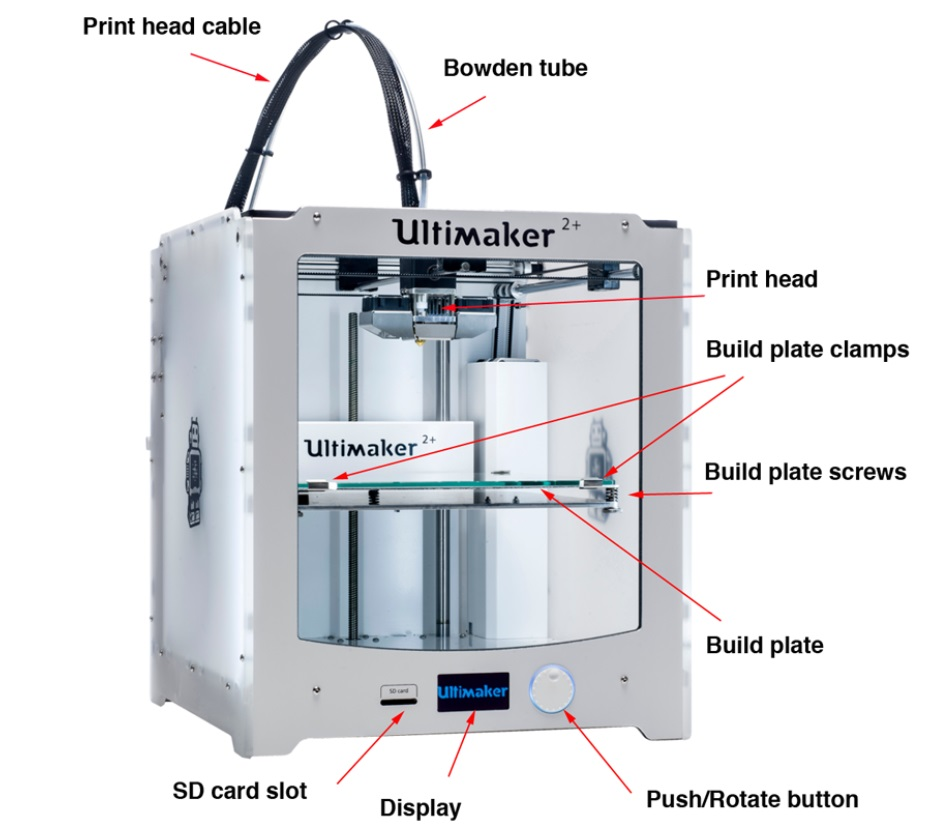
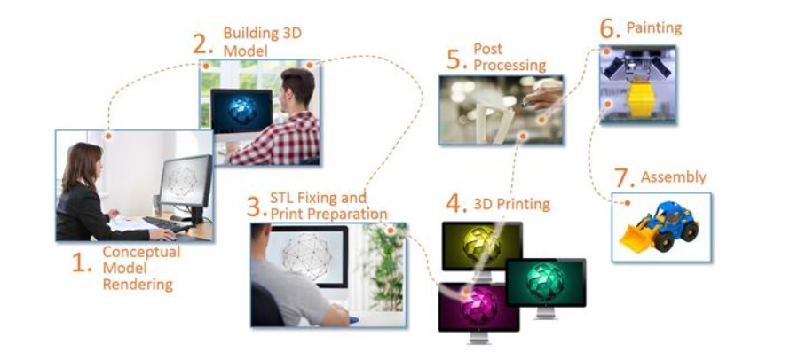

So what exactly is 3D printing? 3D printing the process of using a digital file to create a 3-dimensional object. This is done through an additive process, where successive layers of material are placed down until a complete object is formed. When viewed as a cross-section, the many thin layers will be clearly visible. 3D printing allows us to create complex shapes and designs using less material than most traditional manufacturing methods, which paves way for many ambitious projetcs.
Video credits: The Wrench on YouTube
The most commonly used materials in 3D printing would be PLA (Polylactic acid) and ABS Acrylonitrile butadiene styrene. In SP’s workshops, we tend to use mostly PLA for 3D printing projects. The 3D printing machine that SP uses is the Ultimaker2+, shown below along with its labelled parts.

This is the machine we used to create our 3D knight chess piece for one of our assignments. But before we were able to carry out printing, we must first carry out the steps listed in the workflow below. A conceptual model must first be renderred, followed by building a 3D model using a modelling software. STL fixing is done next and the design is prepared for printing. After printing, there are additional steps that may be done to improve the printed model's design and quality, such as post-processing, painting and assembly of additional parts.

A more in-depth explanation on how these steps were carried out can be found under “3D printed knight chess piece”. Head over to “projects” to find out more!